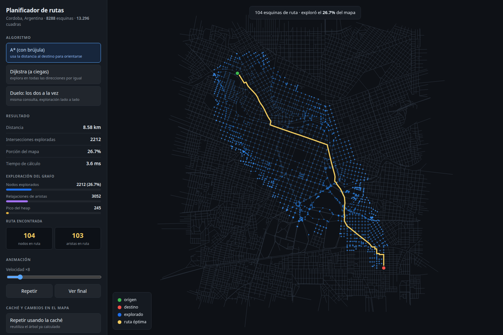
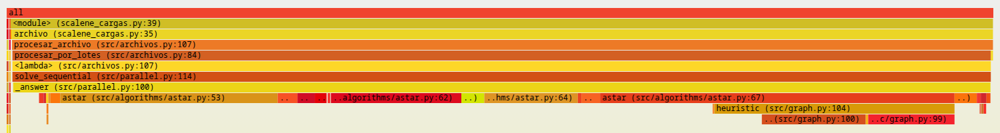
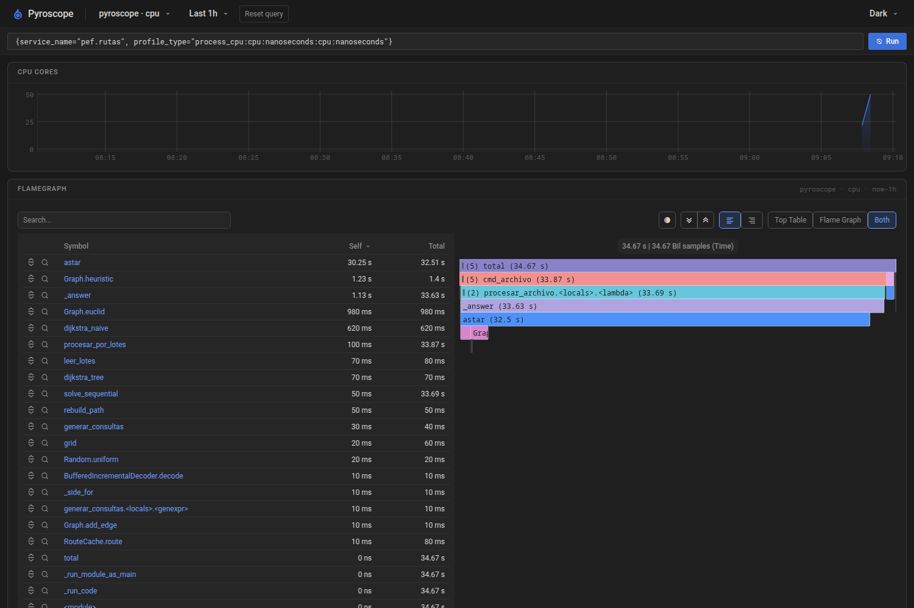
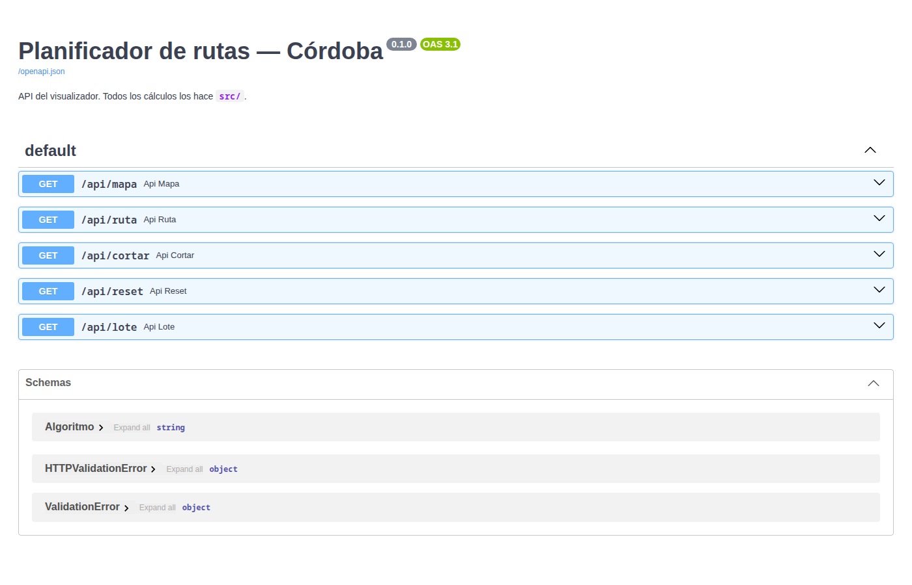

Programación Eficiente · Segundo parcial
Planificador
de rutas.
Parte 2: del programa que funciona rápido al programa que además se puede mantener, medir y probar.
De dónde partimos
En la parte 1 hicimos un programa que encuentra el camino más corto entre dos esquinas de una ciudad.
Era rápido, pero tenía pocos tests, código repetido y sin documentación.
Parte 2: que sea fácil de mantener, medir y probar.

El visualizador sobre el mapa real de Córdoba.
Un punto de la consigna, una herramienta
Lo mismo, escrito una sola vez
Buscamos código repetido y lo dejamos en un solo lugar. Encontramos 6 casos.
La lista de algoritmos estaba copiada en 3 archivos, cada una con nombres distintos.
Para agregar un algoritmo hay que cambiar una línea, no tres archivos.
# src/cli.py {"naive": …, "heap": …, "astar": …, "bfs": …}
# src/parallel.py ALGORITHMS = { "naive": …, "heap": …, …}
# viz/server.py ALGORITMOS = { "baseline": …, "dijkstra": …, …}
# src/algorithms/__init__.py ALGORITHMS = { "naive": dijkstra_naive, "heap": dijkstra_heap, "astar": astar, "bfs": bfs, }
Scalene
Un perfilador de Python: corre el programa y mide cuánto tiempo pasa en cada línea del código.
En la parte 1 sabíamos qué función era lenta, pero no qué línea. Scalene lo responde sin tocar el código.
Dos líneas se llevan todo el tiempo, igual que lo que habíamos medido a mano.
$ scalene --cli --cpu bench/cargas_perfilado.py Line │Time │ 46 │ 30% │ if not visited[i] and dist[i] < best: 65 │ 70% │ continue # recorre todas las aristas
| Parte lenta | Scalene | A mano (parte 1) |
|---|---|---|
| Recorrer todas las aristas | 66–70 % | 65,9 % |
| Buscar el nodo más cercano | 30–33 % | 34,1 % |
py-spy y el flamegraph
Otro perfilador, que mira el programa desde afuera mientras corre y dibuja un flamegraph: cada barra es una función y su ancho es el tiempo que ocupa.

Al procesar un archivo de consultas, casi todo el ancho es A*. Leer y escribir el archivo casi no aparece.
La heurística de A* sola ocupa el 37 % del tiempo: es lo próximo a optimizar.
Pyroscope: qué es y cómo funciona
Una herramienta que vigila una aplicación mientras funciona y muestra en una página web en qué gasta la CPU. Pyroscope es uno gratuito, que corre en Docker.
Sacar fotos
Un agente dentro de nuestra app anota 100 veces por segundo qué función se está ejecutando.
Enviarlas
El agente manda esas fotos al servidor de Pyroscope, con una etiqueta por comando (archivo, comparar…).
Contar
La web cuenta en cuántas fotos aparece cada función. La que más aparece es la que más CPU usa.
Pyroscope con nuestra app

Simulamos uso real corriendo varios comandos de la CLI (comparar, archivo…) con el agente conectado.
del tiempo de CPU fue A* (32,5 de 34,7 s)
Scalene mide una corrida. Pyroscope queda prendido: en una app real juntaría datos todo el tiempo.
Un archivo con un millón de pedidos
Entra un archivo con pedidos origen → destino. Sale otro con el costo de cada ruta.
Leer de a pedazos: el archivo nunca está entero en memoria.
Cada lote se reparte entre todos los núcleos.
Escribir un bloque grande en vez de fila por fila.
Cómo se ve funcionando
$ python -m src.cli generar-consultas --size 2000 \ --n 200000 --salida consultas.csv 200000 consultas -> consultas.csv (124 ms) $ python -m src.cli archivo --size 2000 \ --entrada consultas.csv --salida respuestas.csv lote=10000 modo=procesos 12816 ms $ head -3 respuestas.csv origen,destino,costo,nodos_camino 1754,925,36.38,38 1892,1751,45.76,44
def leer_lotes(ruta, tam_lote): with open(ruta, buffering=BUFFER) as f: lector = csv.reader(f) next(lector) # cabecera while lote := list(islice(lector, tam_lote)): yield [(int(s), int(t)) for s, t in lote]
yield entrega un lote y espera a que le pidan el siguiente. En memoria hay un solo lote a la vez.
Qué medimos
menos memoria con un millón de filas
más rápido al repartir entre procesos
ruff
Una herramienta que revisa que el código siga PEP 8, la guía de estilo de Python, y lo formatea solo.
$ ruff check . # parte 1 Found 172 errors. $ ruff check . # parte 2 All checks passed!
Sphinx
Arma una página web de documentación leyendo los comentarios que ya están en el código (los docstrings).
$ sphinx-build -b html docs docs/_build/htmlSi cambia el código, la documentación se regenera sola.

SonarQube
Analiza el código y marca bugs, riesgos de seguridad y partes difíciles de mantener.
| Parte 1 | Parte 2 | |
|---|---|---|
| Problemas de mantenimiento | 17 | 0 |
| Bugs | 1 | 0 |
| Vulnerabilidades * | 11 | 0 |
| Cobertura de tests | 65 % | 97 % |
* Eran falsos positivos: números al azar para generar grafos de prueba.

Cambiar sin romper ni frenar
Cada cambio de los puntos 1 y 5 pasó por este ciclo. Si fallaba un paso, se volvía atrás.
Mismos tiempos: el refactor no lo hizo más lento.
Un cambio que descartamos
Busca el camino de A a B y frena apenas llega. Sirve para una consulta suelta.
el mismo bucle
copiado dos veces
Calcula el camino de A a todas las esquinas y lo guarda: toda consulta que salga de A se responde al instante.
El intento
Que el de la caché reutilice el bucle del normal, para no tener código repetido.
Los tests
Pasaban: el resultado seguía siendo correcto.
La medición
Era 6 % más lento (8,6 → 9,2 ms). El bucle compartido hace controles que la caché no necesita, como “¿ya llegué al destino?”.
Decisión: dejarlo duplicado a propósito y anotar el motivo en el código. La caché es lo que más se usa, así que ese 6 % se pagaba en cada consulta.
pytest
Un framework que encuentra y corre los tests solo, y si algo falla dice exactamente qué.
Cada algoritmo se compara contra uno lento pero seguro (Bellman-Ford). Si dan distinto, hay un bug.
@pytest.mark.parametrize("name", ["naive", "heap", "astar"]) def test_costs_match_reference(graph, name): ... # 1 test → 12 casos
tests
del código probado
$ pytest 76 passed in 1.05s
FastAPI
Un framework para armar servidores web en Python. Lo usamos para el servidor del visualizador, que antes estaba hecho a mano.
@app.get("/api/ruta") def api_ruta(desde: int, hasta: int, algo: Algoritmo = Algoritmo.astar): ...
$ curl "localhost:8000/api/ruta?desde=0&hasta=abc" 422 parametro invalido: hasta

Además genera sola esta página para probar la API.
Qué nos llevamos
Medir antes de creer
Con archivos grandes, el problema era la memoria, no el disco.
Contrastar las herramientas
Sonar marcó 11 “vulnerabilidades” que no lo eran.
No todo cambio conviene
Un refactor más limpio pero más lento lo descartamos.
Los tests van primero
Con 76 tests, cambiar código dejó de dar miedo.